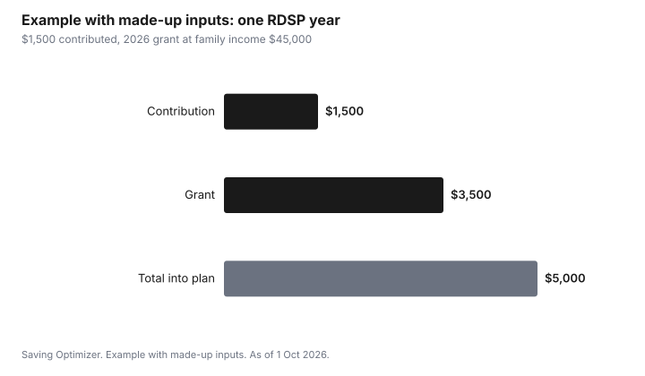

Kids · Canada
Opening an RDSP for a Child: Grants, Bonds and the 10-Year Rules
An RDSP for a child in Canada is a long-term savings plan that federal grants and bonds can grow far faster than contributions alone. A child who is eligible for the disability tax credit can have an RDSP opened by a parent or guardian. The Canada Disability Savings Grant matches contributions at up to 300 percent, to $3,500 a year, and the Canada Disability Savings Bond adds up to $1,000 a year for lower-income families with no contribution needed. The catch is the 10-year rule: grants and bonds paid in the 10 years before a withdrawal can have to be repaid, so an RDSP suits money that can stay put.
Key takeaways
- The child must be eligible for the DTC, have a SIN and be a Canadian resident. A parent or legal guardian can open the plan.
- Grant for 2026: 300 percent on the first $500 and 200 percent on the next $1,000 at family income up to $117,045, otherwise 100 percent on $1,000. Up to $3,500 a year, $70,000 lifetime.
- Bond for 2026: up to $1,000 a year at family income up to $38,237, reduced to zero at $58,523. $20,000 lifetime. No contribution needed.
- Unused grant and bond entitlements can be carried forward up to 10 years.
- Withdrawals can trigger repayment of grants and bonds paid in the previous 10 years, the assistance holdback amount.
Who can open one
The beneficiary must be eligible for the disability tax credit, have a social insurance number, be resident in Canada when the plan is opened, and be under 60. For a minor, the plan holder is usually a parent or legal guardian. RDSPs are offered by some banks and financial institutions, not all. Ask which institutions in your area offer them. The Child Disability Benefit guide covers the DTC application first.
Grants: matching contributions
The Canada Disability Savings Grant matches contributions. For 2026, family income is based on the 2024 tax year. For a minor, family income is the parents' income.
| Family income | Matching rate | Maximum grant |
|---|---|---|
| Up to $117,045 | 300% on the first $500; 200% on the next $1,000 | $3,500 on $1,500 contributed |
| Above $117,045 | 100% on the first $1,000 | $1,000 on $1,000 contributed |
Bonds: money with no contribution
The Canada Disability Savings Bond is paid to lower-income families even if nobody contributes. For 2026, a family income up to $38,237 gets the full $1,000. Between $38,237 and $58,523, the bond is reduced. Above $58,523, there is no bond. The lifetime maximum is $20,000. You must apply for the bond when you open the plan, through the issuer.
Carry-forward: catching up
If the plan was opened late, or a year was missed, unused grant and bond entitlements can be carried forward for up to 10 years, starting from 2008 or the year the beneficiary became DTC-eligible, whichever is later. A carry-forward grant is paid when contributions are made, up to an annual maximum of $10,500 in grants and $11,000 in bonds. A lump-sum contribution can catch up several missed years at once.
The 10-year rule and the assistance holdback
The RDSP is designed for the long term. When money is withdrawn, some or all of the grants and bonds paid into the plan in the previous 10 years, called the assistance holdback amount, may have to be repaid to the government. CRA says the repayment is up to $3 of assistance for every $1 withdrawn, capped by the holdback amount. If the plan is closed or the beneficiary dies, the whole holdback is repaid. Ask the issuer for the holdback before any withdrawal.
Contributions are not deductible and are capped at $200,000 lifetime per beneficiary. Investment growth, grants and bonds are taxable to the beneficiary when withdrawn as part of disability assistance payments; contributions come out tax-free.
Example with made-up inputs: one year at $1,500
These numbers are an example with made-up inputs. A family with income of $45,000 contributes $1,500 in a year. At income up to $117,045, the grant is 300 percent on $500 ($1,500) plus 200 percent on $1,000 ($2,000), so $3,500. At $45,000, the bond is reduced, not zero; the issuer calculates it, so the example leaves it out. One year puts $5,000 into the plan before growth: $1,500 contributed and $3,500 in grants.
| Line | Amount |
|---|---|
| Contribution | $1,500 |
| Grant at 300% on $500 | $1,500 |
| Grant at 200% on $1,000 | $2,000 |
| Total into the plan | $5,000 |

Sources
- ESDC, Notice 577: RDSP income matching rates for 2026, as of 1 Oct 2026. Grant threshold $117,045; bond full to $38,237, phased out by $58,523; based on 2024 income.
- ESDC, How much you could get in grants and bonds, as of 1 Oct 2026. $3,500 and $70,000 grant limits; $1,000 and $20,000 bond limits; carry-forward 10 years; annual carry-forward maximums.
- CRA, RC4460 Registered Disability Savings Plan, and Canada disability savings grant and bond, as of 1 Oct 2026. Eligibility; $200,000 contribution limit; assistance holdback; $3 per $1 repayment.
- The $45,000 income and $1,500 contribution in the example are made-up inputs.
Frequently asked questions
Can I open an RDSP for my child?
Yes, if the child is eligible for the disability tax credit, has a SIN and is resident in Canada. A parent or legal guardian usually holds the plan for a minor. Not every financial institution offers RDSPs.
How much is the RDSP grant in 2026?
At family income up to $117,045, the grant is 300 percent on the first $500 and 200 percent on the next $1,000 contributed, up to $3,500 a year. Above that, it is 100 percent on the first $1,000. The lifetime maximum is $70,000.
Who gets the RDSP bond?
For 2026, families with income up to $38,237 get the full $1,000 a year without contributing, reduced to zero at $58,523. The lifetime maximum is $20,000. Apply through the issuer.
What is the RDSP 10-year rule?
Grants and bonds paid in the 10 years before a withdrawal, the assistance holdback amount, may have to be repaid, up to $3 for every $1 withdrawn. Closing the plan repays the whole holdback.
Can I catch up on missed RDSP grants?
Unused grant and bond entitlements can be carried forward up to 10 years, from 2008 or when the beneficiary became DTC-eligible. Carry-forward grants are paid when contributions are made, within annual limits.
Researched and drafted with AI assistance and fact-checked against official Canadian sources. How we create content.
Disclosure: RDSP issuers are an offer type; none is named or ranked. Saving Optimizer may earn a commission if a partner link is added later; no partnership is claimed. Education only. This is not financial or tax advice.